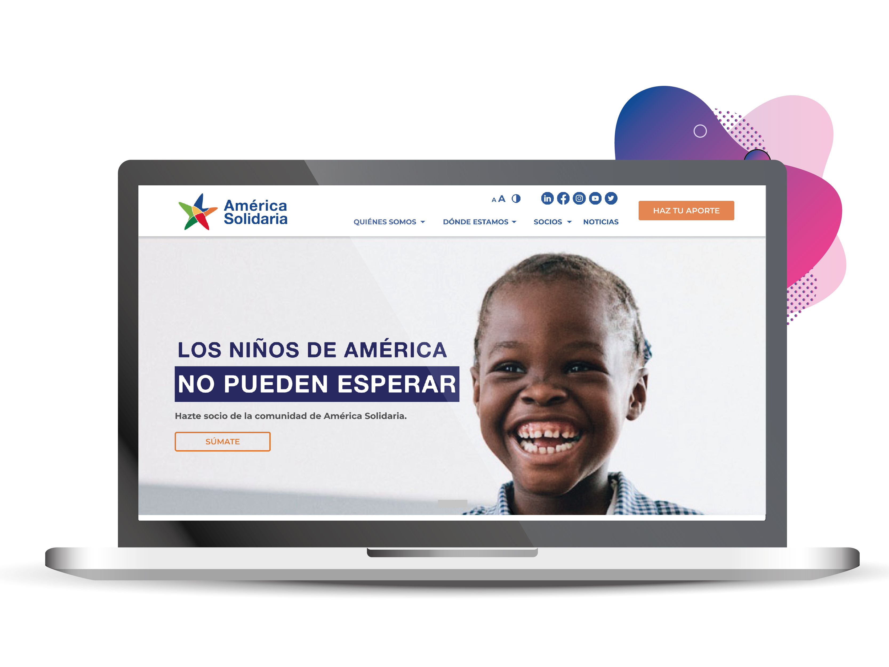
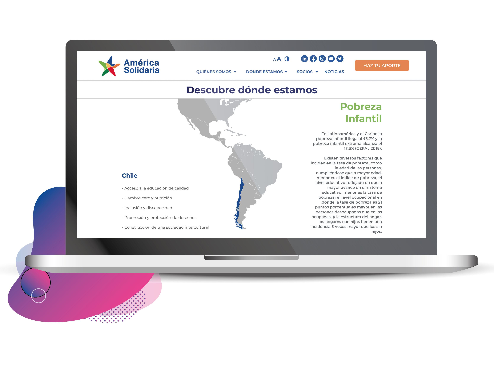
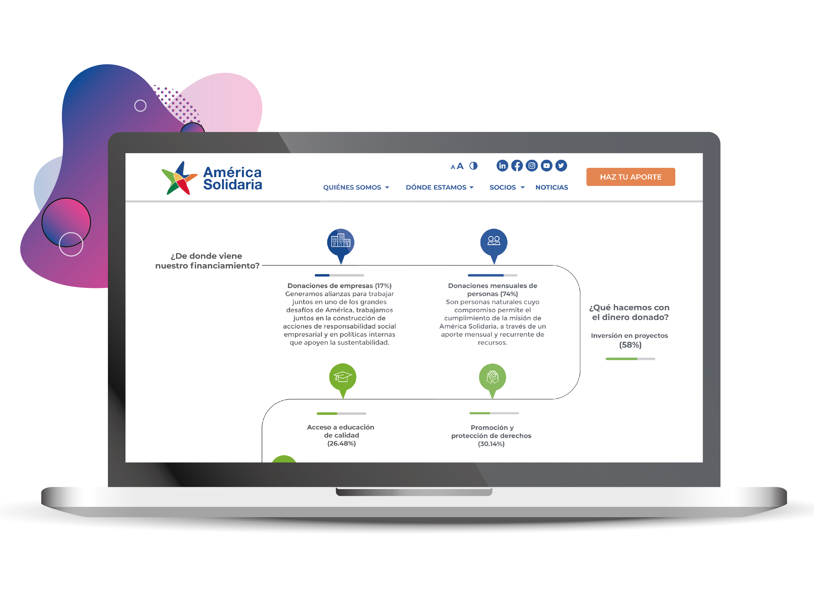
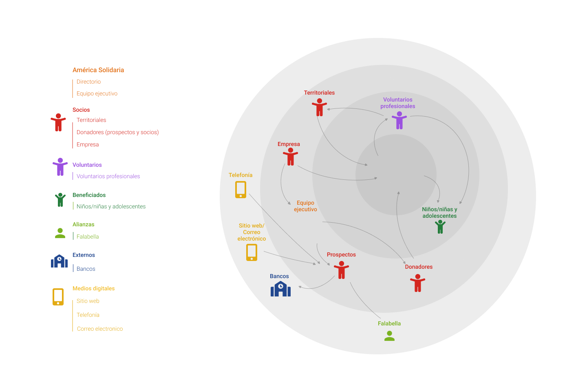
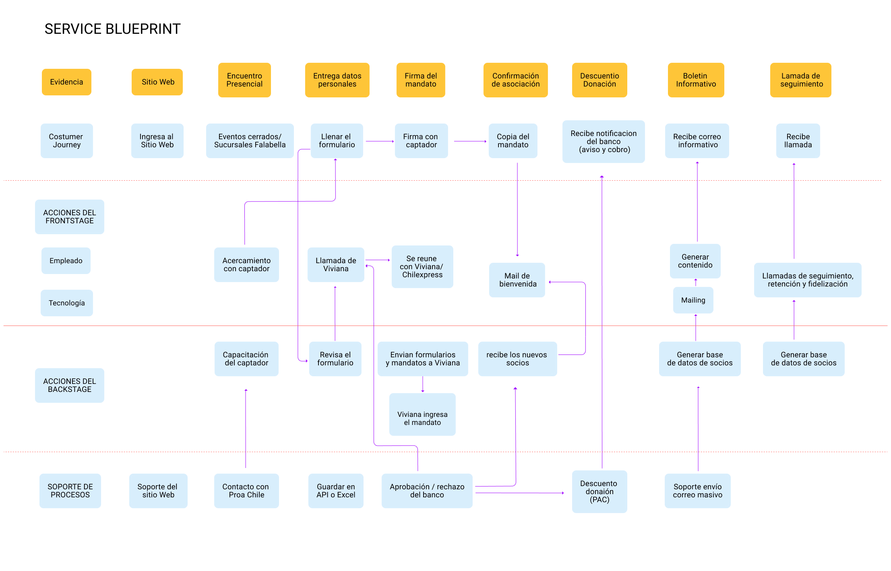
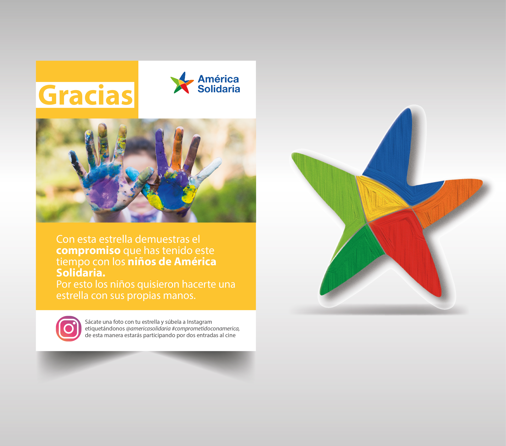
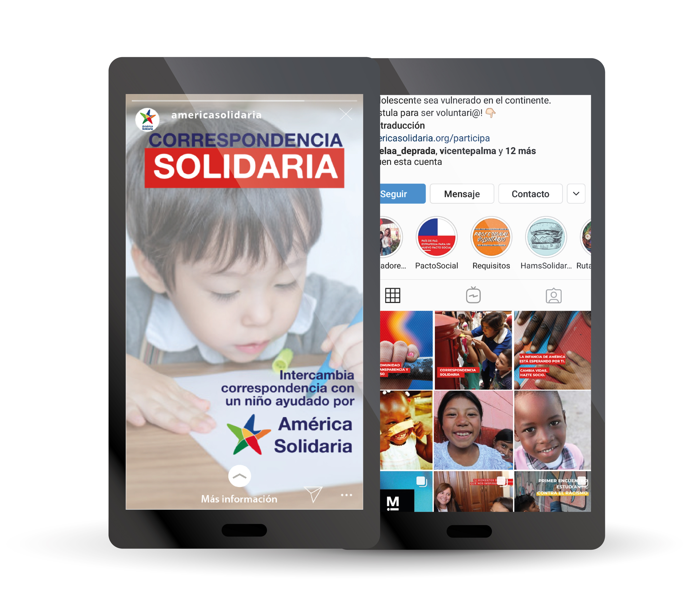

Stakeholder map
Con esta herramienta pudimos identificar que el mayor financiamiento de america solidaria viene de los socios personas (75%), es por esto que necesitamos fidelizar y captar nuevos socios.
América Solidaria es una organización que trabaja por la superación de la pobreza y vulneración de niños/niñas y adolescentes del continente.
Se busca que el socio tenga un compromiso con su aporte para que sea constante, que el socio se sienta parte de una organización de peso, que sea bien visto, posicionado, con una buena causa.
Insights que logramos identificar:
Bajo esto llegamos a diseñar un sistema de fidelización de socios mediante estrategias de marketing y el rediseño de su sitio web.
Conformado por 3 integrantes, con una duración de 3 semanas.
Mi rol


En este desafío utilizamos la metodología Design Thinking. En la primera etapa realizamos entrevistas a distintos tipos de socios de fundaciones. Así pudimos comenzar a direccionar la investigación según los resultados de las entrevistas. Además, se realizó un stakeholders map para analizar visualmente la relación entre todos los actores. En paralelo realizamos un benchmark con la finalidad de analizar la arquitectura de la información, lenguaje y usabilidad de distintos sitios.
Una vez definidos todos los ítem, se tiene en consideración que toda la ideación será coherente con las construcciones previas de la organización. Toda la información recopilada fue pasada a post-it virtuales para luego ser agrupados según contenido, sacando dos grandes insights, los cuales dirigieron nuestro proyecto. Por otro lado, se definió para el proyecto de América Solidaria una voz y tono para su plataforma y boletines informativos.
A raíz de la investigación e ideación, se definió generar un prototipo del rediseño de la plataforma web existente de América Solidaria. Para esto se utilizó el programa Figma, de prototipado web. Además se hizo testeo de guerrilla donde se logro identificar falencias de usabilidad e iterar de manera inmediata.
Con esta herramienta pudimos identificar que el mayor financiamiento de america solidaria viene de los socios personas (75%), es por esto que necesitamos fidelizar y captar nuevos socios.

Su objetivo es graficar los componentes de un servicio con suficiente detalle para analizar, implementar y mantener la orquestación de personas, puntos de contacto, procesos y tecnología. Cubre tanto el escenario frontal (lo que ven los clientes) como detrás del escena.

Junto con la reestructuración del sitio web, hicimos un plan de marketing que complemente la experiencia de ser socio de América solidaria, por lo que canalizamos nuestras ideas principalmente en herramientas que mantengan al socio involucrado de manera interactiva e informado, donde pueda escoger y visualizar proyectos. Dándole un lenguaje mucho más cercano y que se sienta parte del equipo. Se definió la voz de América Solidaria hacia sus socios, esta será:

